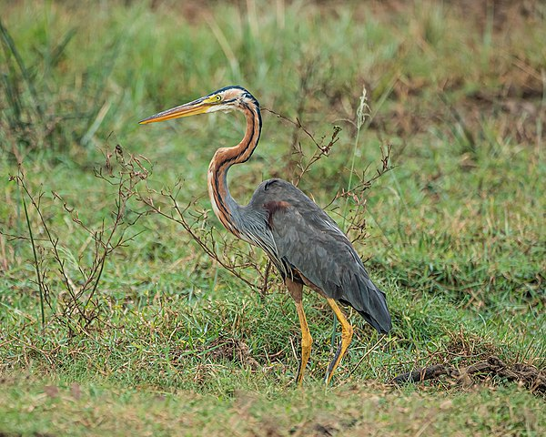

Každý rok se seznam ohrožených živočichů rozrůstá o nové druhy, které čelí dramatickému úbytku své populace. Mezi hlavní příčiny tohoto úbytku patří ničení jejich přirozených stanovišť, nelegální lov a obchod se vzácnými zvířaty, změny klimatu či znečištění prostředí. Ikonické druhy jako tygři, lední medvědi, mořské želvy nebo nosorožci se nacházejí na pokraji vyhynutí, přičemž ztráta každého z nich představuje nenahraditelnou škodu pro biodiverzitu naší planety.
Ochrana ohrožených živočichů vyžaduje cílené kroky, jako je vytváření chráněných oblastí, mezinárodní spolupráce v boji proti pytláctví a podpora chovu zvířat v zajetí za účelem jejich návratu do přírody. Každý z nás může přispět k jejich záchraně, například podporou organizací zaměřených na ochranu zvířat nebo uvědomělým chováním, které minimalizuje negativní dopady na životní prostředí. Bez aktivního přístupu hrozí, že budoucí generace již tato jedinečná stvoření neuvidí.
Volavka červená (Ardea purpurea) je velký druh vodního ptáka z čeledi volavkovitých (Ardeidae). O něco menší než podobná volavka popelavá (délka těla 70–90 cm, rozpětí křídel 120–138 cm); liší se užší hlavou a zobákem a v letu patrnými užšími zakulacenými křídly a často hranatě složeným krkem.
